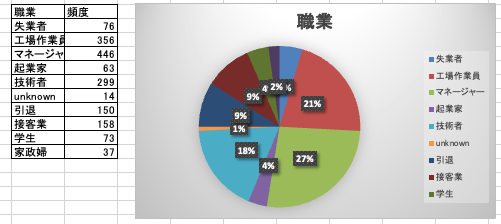

D(data、データ収集)：データの収集・整理
効率の良いデータ収集
一次データ：目的に沿って新たに収集されるデータ、収集には時間とコストがかかる。例えば分析の目的に合わせたアンケートデータなど
- 二次データ:他の目的によってすでに収集済みのデータ。具体的には通常業務で収集されている、販売データや顧客データ、官公庁などの統計データなどがあります。必ずしも目的にあったデータではないため、加工や個人情報が含まれるデータを扱う際には注意が必要です。
データはやみくもに収集してはいけません。先程紹介したイシューツリーを使用して、大枠の問題を頂点として、考えられる要因や仮説、それらを検証するデータと展開を行います。
データの最適化
ポイント - 必要最低限必要なデータより余裕をもたせる 検証・分析に必要なデータに絞り込むのではなく、幅をもたせます。分析や検証を行っていくと違う切り口で分析をしたりすることがあります。例えばあるAという商品を分析する時、Aの販売データだけではなく、同じ系列や競合のデータがあることによってより多角な検証を行うことが可能になります。
必要に応じて異常値を取り除く 明らかに他のデータより値が大きかったりすることがあります。このような異常値のデータは分析や検証を行う上でマイナスの要因となってします可能性があります。 例えば、自然災害などの発生により集客ができなかったなど、このように突然発生するインシデントにより異常値が入っていたり、入力ミスなどで異常値が含まれることがあります。 異常値に対する分析が必要なこともありますので適宜判断を行う必要があります。散布図などにプロットすることによって異常値を見つけやすくなります。 また、外れ値除去の方法として３シグマ法等といった手法もあります。こちらはより発展的な内容ですので名前だけ紹介します。
データの理解をする
データを理解する【実装】
データの全体像の理解
この様なデータ全体の特徴を数値で表したものを代表値と呼び、これには以下のような種類があります。
平均値（Mean）・最頻値（Mode）・中央値（Median） それぞれ意味合いは以下です。 意味
平均値：データの個数、観測値など数値を合計し、その数値の個数で割った値
最頻値：データの中で最も出現する値
中央値：データを小さい順に並べたときの中央に位置する値
※ 具体的な計算方法などは補足をご確認ください。
この代表値を扱う際に重要なこととして、データの特徴を表現する際に １ つの代表値だけで判断しないことが挙げられます。 実際に確認をしてみましょう。
集計 - 単純集計
今回のような数値が独立して何かの意味を表現しているものの場合には、どのような値がどのような割合で含まれているかに注目される事が多いです。このような場合には、円グラフを用います。
まずは、成約の有無の値を確認してみましょう。
今回データには 0（成約無）,1（成約）の数値が入っています。 次にどのくらいその値が含まれているのか、頻度の集計を行いましょう。 これには COUNTIF 関数を使用します。 COUNTIF(範囲,条件) の様に値を渡します。
画像
うまく集計ができました。 続けて、職業やローンの有無列も単純集計を行いましょう。
可視化：円グラフ
次に先程算出した頻度を可視化して直感的に理解しやすくします。 データ分析では、結果を誰かに伝える必要があるため、可視化を用いて結果を説明される誰かが直感的に分かるようにする必要があります。 先程算出した頻度の部分を選択して、「挿入」 → 「円グラフ」の順に進めます。
次に、グラフエリアで右クリック → 「データラベルの追加」
加えて、グラフエリアで右クリック → 「データラベルの書式設定」 → 「ラベルの内容」のパーセンテージにチェックを入れます。
グラフのデータを確認します。 グラフエリアで右クリック → 「グラフデータの選択」 → 「横（項目）軸ラベル」に成約の値が指定されていることを確認します。
以下のようにチェックが入っていれば OK をクリックします。 表示されている割合や実数値と、グラフの凡例が正しい事を確認しておいてください。

続いて職業も同じ用に円グラフで可視化を行いましょう。

可視化：ヒストグラム
年齢のような連続値のデータの場合、先程のように割合を見ても良いですが、割合の分割数が多いため、解釈がしにくく、最適ではありません。このような場合は、分布を確認します。分布はヒストグラムで確認します。 年齢の列を選択したままで、「挿入」 → 「ヒストグラム」を選択します。
ヒストグラムはデータをある特定の区間で区切ることで、区間の個数や各区間でのばらつきを表示するグラフで、例えば身長のような連続する値の場合に使用することが適した可視化の方法です。
ヒストグラムは、区間でデータを区切ります。身長で言えば、120~130、140〜150、のように区切るイメージです。この区間のことを bin と呼びます。 ヒストグラムでは、bin の幅を調整することができます。
ここまでで以下のようなヒストグラムが作成できます。
Excel のヒストグラムは、bin を自動で設定してくれますが、この状態だとうまく表現できているとは言えない場合があります。今回も bin の調整する必要が理想です。 bin の調整にはいくつか方法がありますが、今回は数を調整します。 「右クリック」 → 「軸の書式設定」 → 「ビンの幅」を 5 に変更します。

画像の用に年代ごとでの可視化を行うことができました。データを見てみると 30 代の顧客のデータが多いことがわかりました。
例）データから分かること - リストの平均年齢41歳 - リストの平均残高1450.296ドル - 成約数、不成約の数はあまり変わらない - 2000 サンプルと16列あることがわかる
演習）他にどのようなことがわかるか書き出してみよう。 5分
この用にデータを可視化し、理解を深めることによって分析の指針を決定することも可能です。フレームワークの都合上、先に仮説の設定を紹介しましたが、この段階でデータから仮説を考えることも可能です。
この用にデータを可視化し、理解を深めることによって分析の指針を決定することも可能です。フレームワークの都合上、先に仮説の設定を紹介しましたが、この段階でデータから仮説を考えることも可能です。
データとデータから新しい情報を得る
それぞれのデータを確認し、データの大枠の理解が進みました。次に複数のデータをまとめたり、分解おこない、更に詳細な理解を深めます。
様々な視点でデータを確認することによって、新しい発見をする可能性が高まります。 集計・可視化を上手く使用すると 2 変数の関連性を理解することが可能です。
データの種類
2 変数の関連性を正しく理解するにはデータの種類と尺度について理解している必要があります。ここまで何気なくデータを扱ってみましたが、データにはその種類に明確な区分が存在します。まずは、全体像を以下の図から確認します。

データは大きく、質的データと量的データに区別することができます。質的データとは数値に直接置き換えることができないデータを指します。性別（男女）、旅行の目的（ビジネス・旅行 etc…）がそれに当たります。
質的データはさらにその尺度の種類で 2 つに分けることができます。1 つは性別のように順序に意味がないものです。このような尺度を名義尺度と呼びます。もう 1 つが食べログの満足度(0,1,2)のように順序に意味があるものです。この様な尺度を順位尺度と呼びます。
これらは見分けるのが難しいのですが、コツとして数値に仮に置き換えて考えてみると良いです。例えば、性別において 男性 : 1 、女性 : 0 と置き換えて考えます。数値として扱うとこの 2 つには差が存在しますが、その差に厳密な意味は存在しません。それに対して満足度は、満足度を 満足 ： １、普通 : 2、不満足 : 0 と置き換えた場合、この数値の差には意味が存在することが分かります。つまり 0 ~ 2 の数値には順序の概念があります。
質的データの対になるものに量的データがあります。量的データとは年齢や売上などのそのまま数値で取り扱えるデータです。量的データは数字の変化が連続的であることが特徴です。例えば、先程挙げた満足度も、1 ~ 5 で評価してください。とアンケートを取った場合には、量的データとも捉えることができます。本コースでは満足度を含めた評価点はすべて量的データとして取り扱います。
量的データも尺度によって 2 つに分けることができます。１ つは年齢のように、数値の間隔に意味があるものです。この様な尺度を間隔尺度と呼びます。もう １ つが売上のように比にも意味があり、単純に 〇〇 倍のように表現できるものです。この様な尺度を比例尺度と呼びます。
これは 0 が本当になにもないことを指しているかで見分けます。年齢が 0 は、本当になにもないことを指していませんが、売上が 0 は本当になにもないことを示しています。
先程挙げたデータの種類の組み合わせによって、関連性の把握する方法が異なります。  *質的変数×量的変数→平均値の比較
*質的変数×量的変数→平均値の比較
実際に今回のデータに対しても、クロス集計や散布図を用いて関係性の把握を行いましょう。
成約の有無と他の列の関係性を確認する
それでは、クロス集計を使用して、職業と成約の有無の関係を見てみましょう。 Excel では、クロス集計を関数を使用して実装することも可能ですが、今回はピポッドテーブルを使用しましょう。 ピボットテーブルを使用するために元のデータから必要な変数のみをコピーしてデータを用意します。 データを用意できたら、満足度と性別の列を選択した状態で、「挿入」 → 「ピボットテーブル」の順で進みます。 以下の図のように、列に職業、行に成約の有無、値に成約の有無を選択します

クロス集計を用いると、引退した方や失業者と行った方の成約が多いことがわかります。
ピボットテーブルを可視化する場合には、棒グラフにすると関連性が分かりやすくなります。 ピボットテーブルを選択した状態で、「挿入」 → 「棒グラフ」を選択します。

上記のように可視化できていれば成功です。 非常に簡単に可視化ができました。
以下の項目に関して関連性を見る可視化を行ってみましょう。
成約の有無 - 結婚状況
成約の有無 - 最終学歴
最終的には以下のようになっていれば正解です。

実際に 2 変数をクロス集計や散布図を用いて描画することによって、データのさらなる理解が深まりました。 - 「ブルーカラー」や「接客」の仕事に就いている顧客は、断られることが多い - 既婚の顧客は定期預金を契約する可能性が低くそう - 最終学歴が中等教育だと成約が数が低そう - Retire（退職）している人の成約率が高い